Bezier Curves
Bezier Curves are very useful and have many applications, but what do we need to know to implement one ourselves? Well, you can keep reading, or you can just download the unity package that I made.
Lerp (Linear Interpolation)
Before we start we need to know what Lerp is. If you want to understand it more mathematically you can check the description in wikipedia. It's very simple. Lerp is a function which takes three parameters — a, b and t, where a is start value, b is end value, and t is time (between 0 and 1). The function is defined like this.
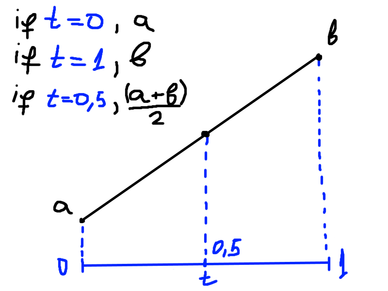
In code it looks like this.
float Lerp(float a, float b, float t)
{
return (1f - t) * a + t * b;
}Note that we can use the same logic if we want to lerp vectors.
Vector3 Lerp(Vector3 a, Vector3 b, float t)
{
return (1f - t) * a + t * b;
}Bezier Curves
Now that we know what lerp is we can start.
A bezier curve is also defined by a function, but a function of higher degree (cubic to be precise). For a cubic curve we need 4 points (control points). These 4 points control the shape of the curve. Lets call the points p0, p1, p2 and p3. p0 is called start point, p1 — start tangent, p2 — end tangent, and p3 — end point. Lets imagine that the points are positioned like this:
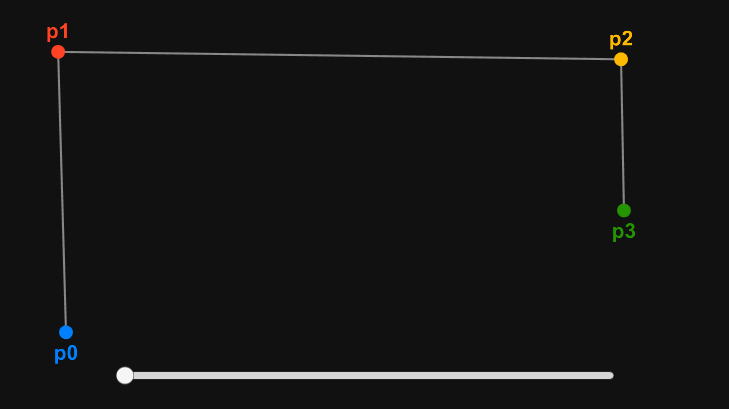
The slider at the bottom represents the t value.
In order to construct the function we are going to go through some steps. In each step we are going to make some lerps, and at the end we will combine these lerps.
Step One
We are going to make 3 lerps — between p0 and p1, between p1 and p2, and between p2 and p3.
Vector3 a = Lerp(p0, p1, t);
Vector3 b = Lerp(p1, p2, t);
Vector3 c = Lerp(p2, p3, t);It looks like this.
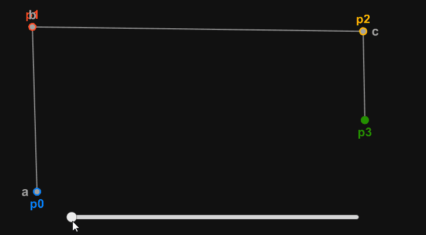
Now lets draw lines between a and b, and between b and c.
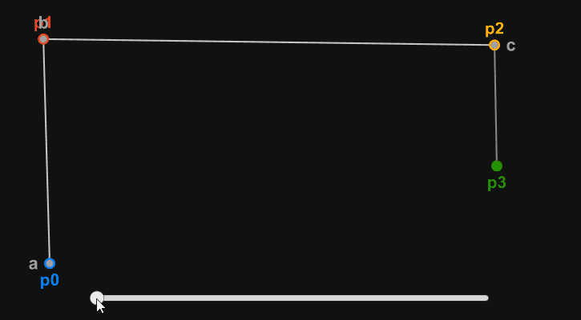
Step Two
Again we are going to make some lerps — this time between a and b, and between b and c.
Vector3 d = Lerp(a, b, t);
Vector3 e = Lerp(b, c, t);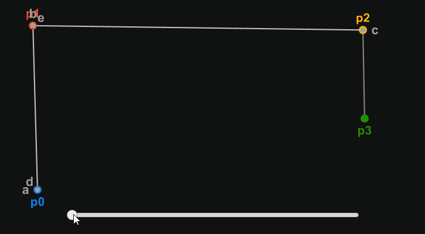
Now lets draw a line between d and e.
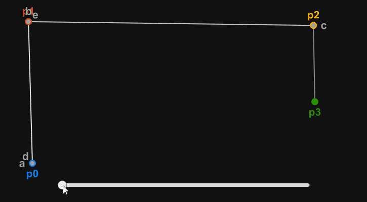
Step Three
Now all we need to do is to make one last lerp between d and e, so we can find the point on the curve at any given time t.
Vector3 pointOnCurve = Lerp(d, e, t);Lets draw the point.
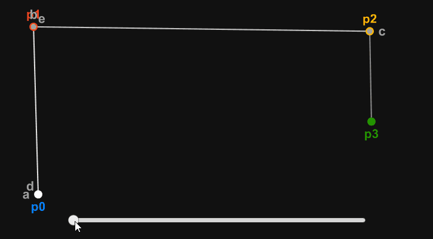
And now let's draw the bezier curve.
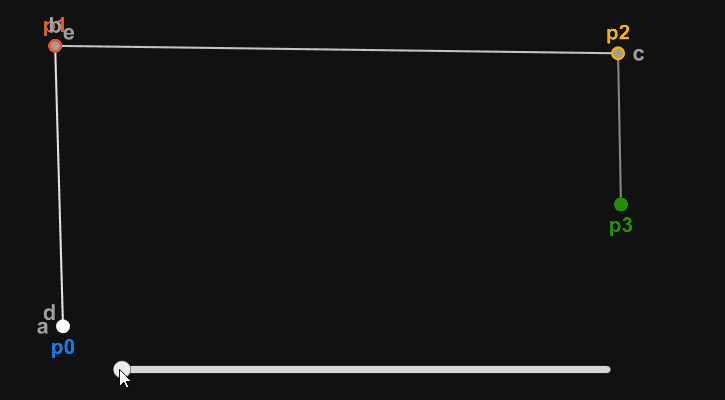
The Function
Now if we combine all these lerps, we get the final function that defines any bezier curve by 4 points and a t value.
Vector3 GetPointOnBezierCurve(Vector3 p0, Vector3 p1, Vector3 p2, Vector3 p3, float t)
{
Vector3 a = Lerp(p0, p1, t);
Vector3 b = Lerp(p1, p2, t);
Vector3 c = Lerp(p2, p3, t);
Vector3 d = Lerp(a, b, t);
Vector3 e = Lerp(b, c, t);
Vector3 pointOnCurve = Lerp(d, e, t);
return pointOnCurve;
}However this function is not very cheap. With a little math we can simplify the function and thus improve the performance.
Optimizations
Mathematically the function looks like this.
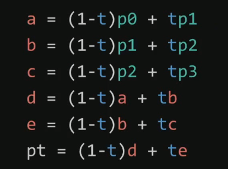
With a little calculations on paper we can simplify it to this.
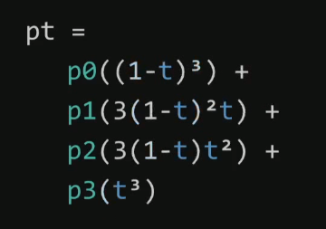
So the final function in code can be written like this.
Vector3 GetPointOnBezierCurve(Vector3 p0, Vector3 p1, Vector3 p2, Vector3 p3, float t)
{
float u = 1f - t;
float t2 = t * t;
float u2 = u * u;
float u3 = u2 * u;
float t3 = t2 * t;
Vector3 result =
(u3) * p0 +
(3f * u2 * t) * p1 +
(3f * u * t2) * p2 +
(t3) * p3;
return result;
}Bezier Splines (Bezier Paths)
What if we want to create a more complex curve?
There are two options:
- Use a higher degree function
- Combine (chain) cubic bezier curves
The first option is not very good, because every time we increase the degree of the function, we create more job for the CPU (we increase the number of calculations).
The second one is more widely used, and it can be explained like this:
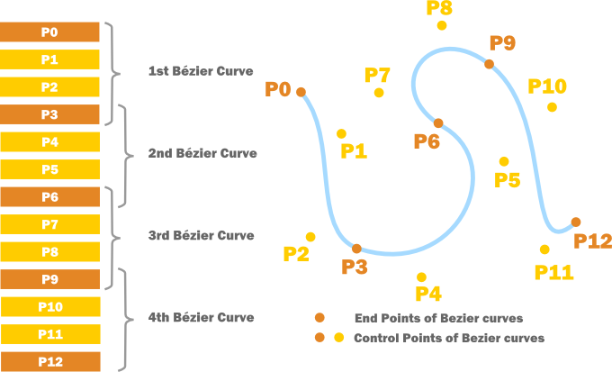
p3 is the end of the first bezier curve and the start of the second one, and so on.